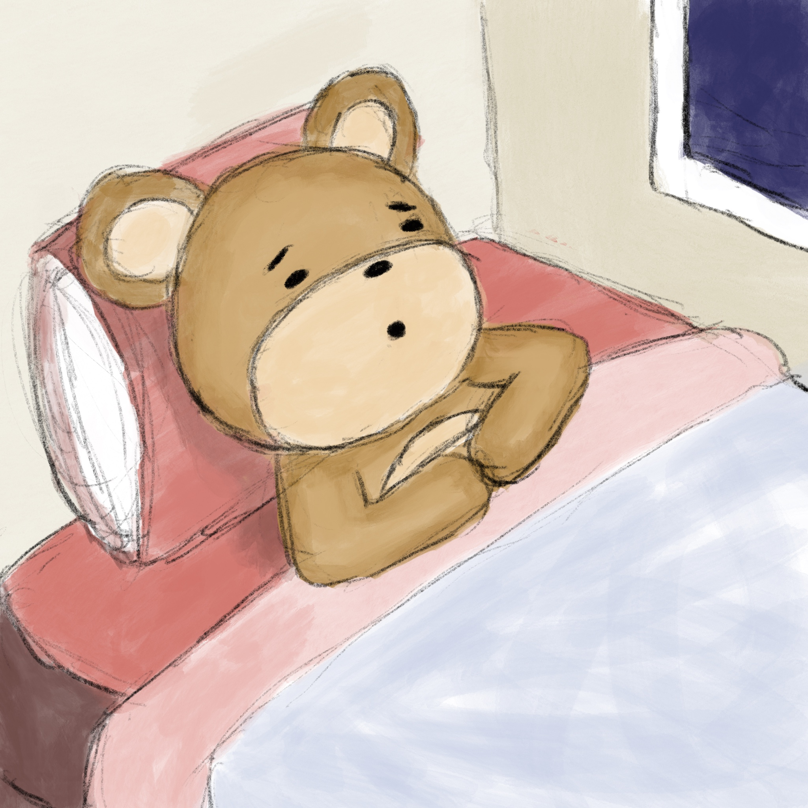
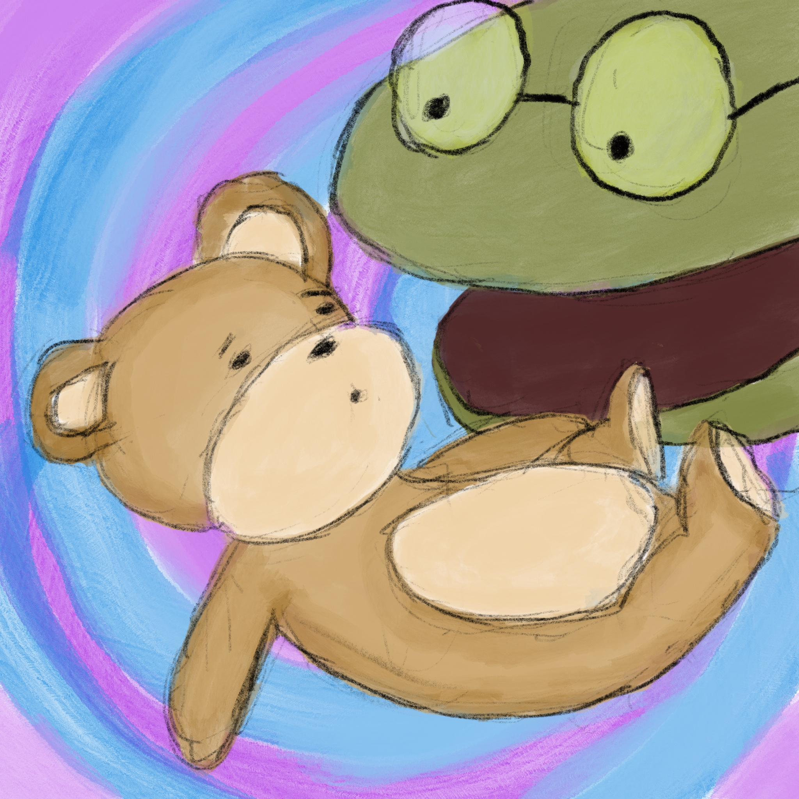
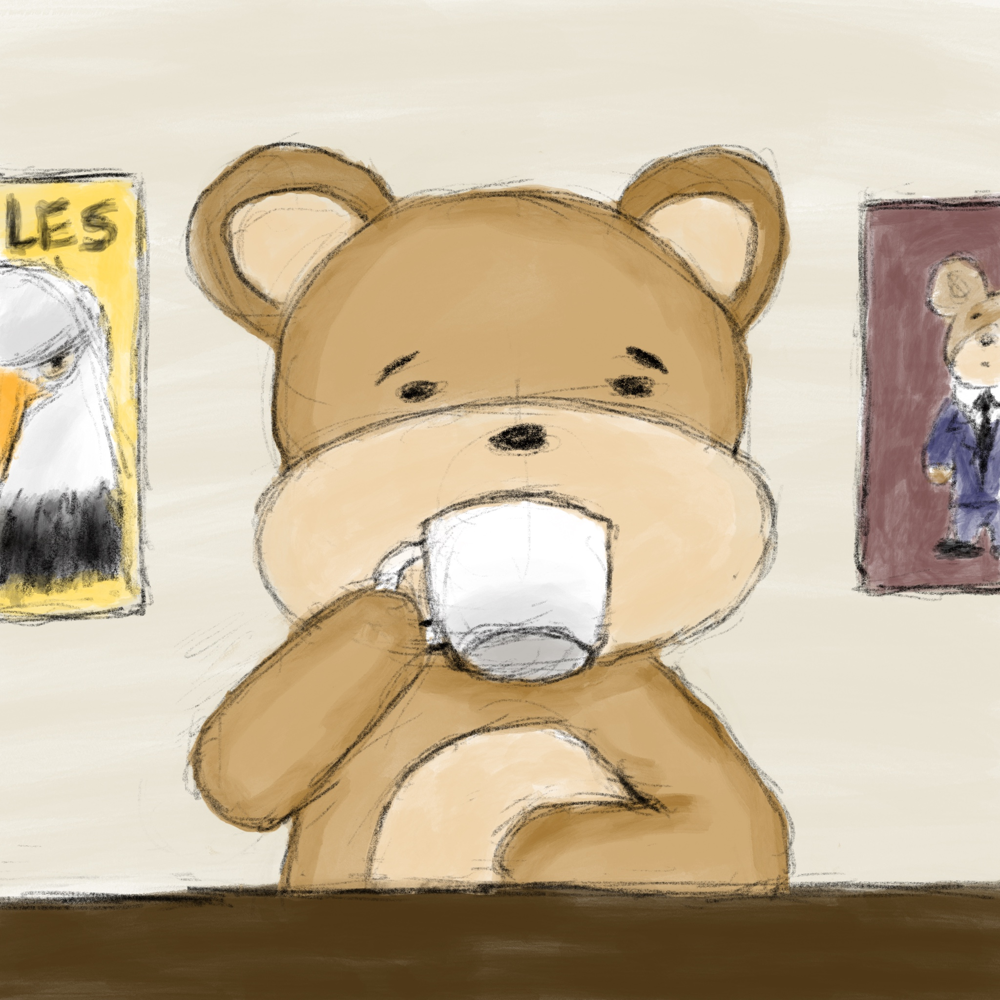

The bear crawled into his comfy bed as the rain started in earnest again; he listened to the sound of the raindrops against his window and thought about all he had been through that day. “So much happened today,” he thought to himself, “I really feel like I’ve embarked on a journey. Maybe I’ll find out what that gap in my heart line means after all. There’s so much to process, though, I need to talk about this all with some old friends who know me to understand what it all means.” And with that, he drifted off to sleep. #31

As he drifted into dreams, the tortoise’s head appeared in giant form. “BEAR!” the head boomed. “BE WARY OF CHANGE FOR CHANGE’S SAKE. RESIST!” The bear woke with a start. “What on earth could that mean?” He thought. “I thought I was supposed to make a change!” #32

In the calm of the morning, the bear thought about his next steps over a hot cup of coffee. “I think I should go see Cooksie and Mr. Peanut. They always give me good perspective on whatever’s going on.” #33